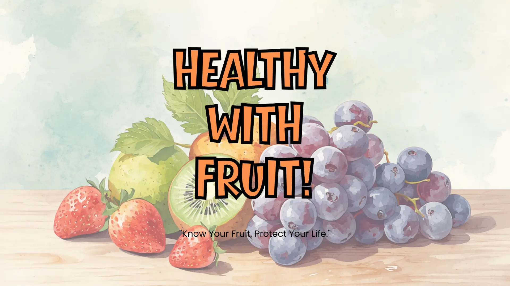
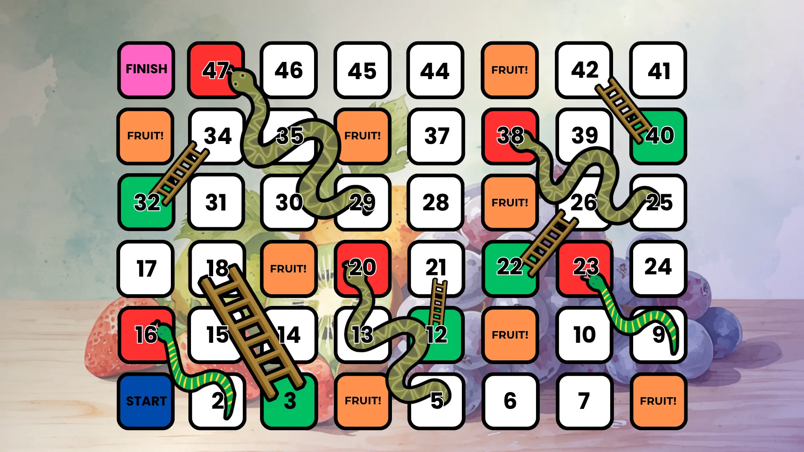
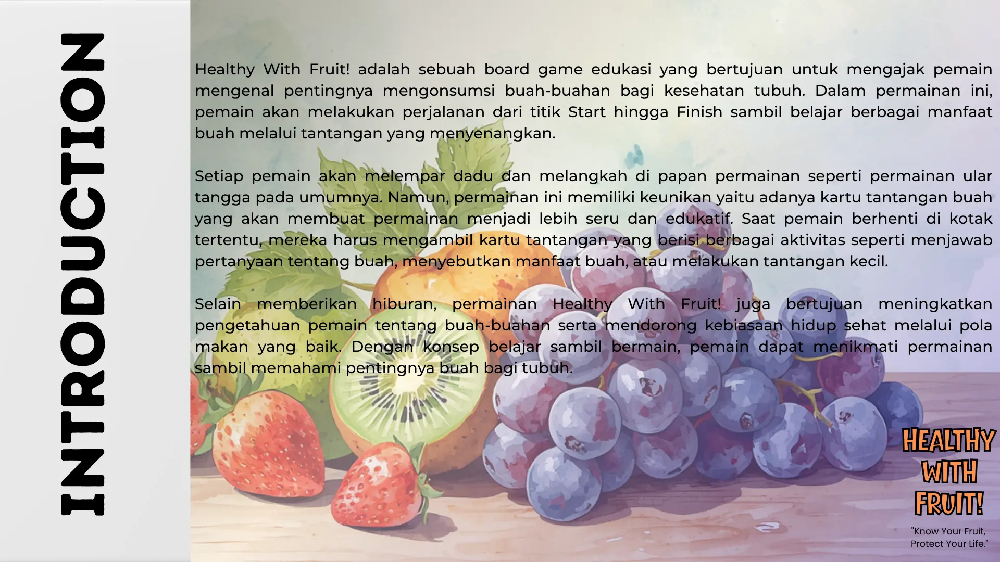
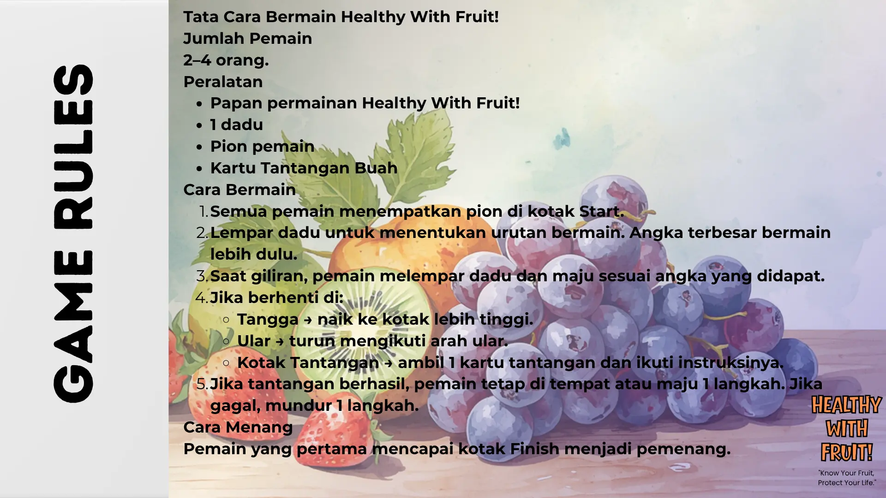
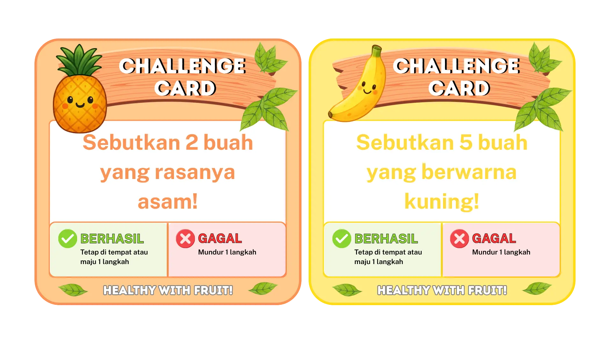
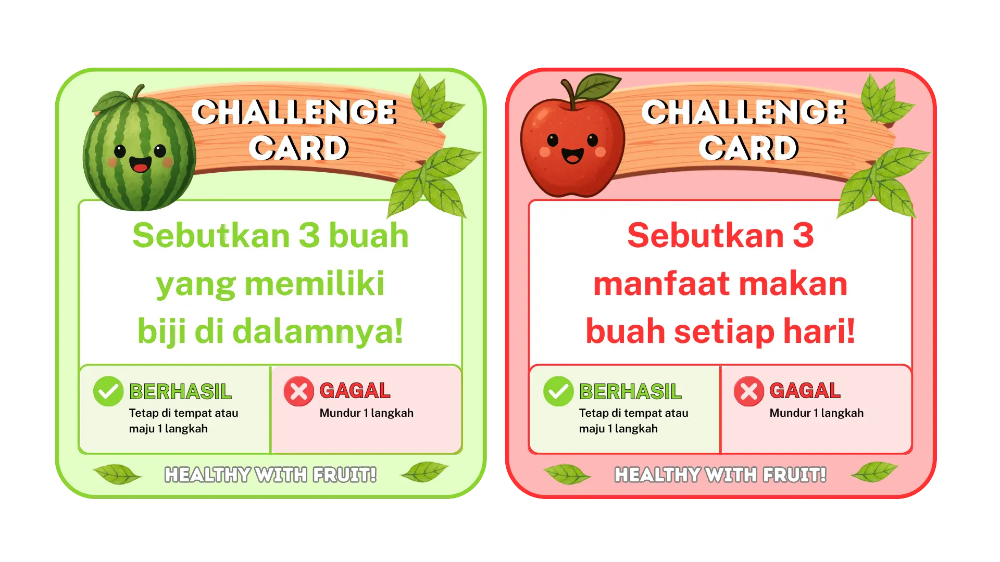
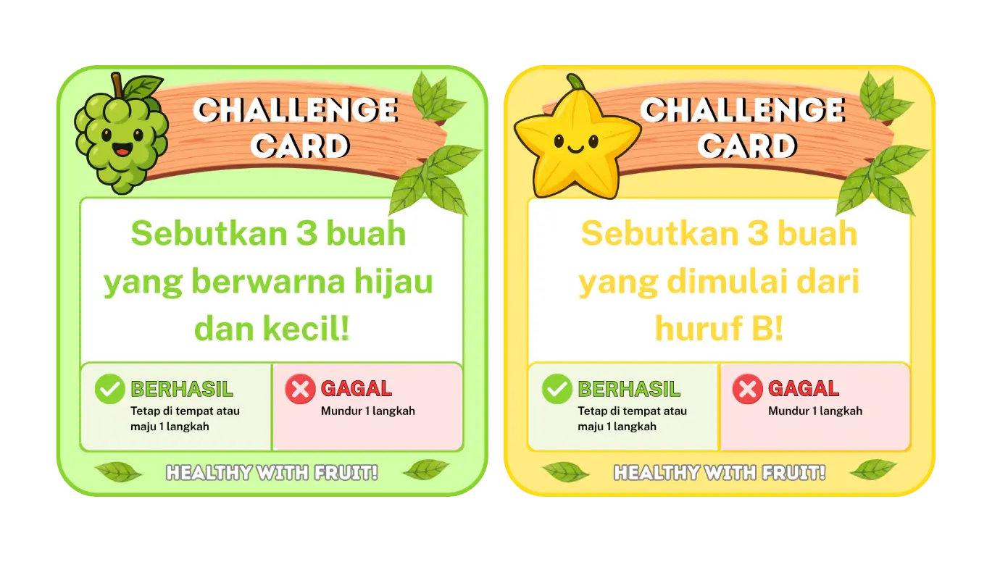
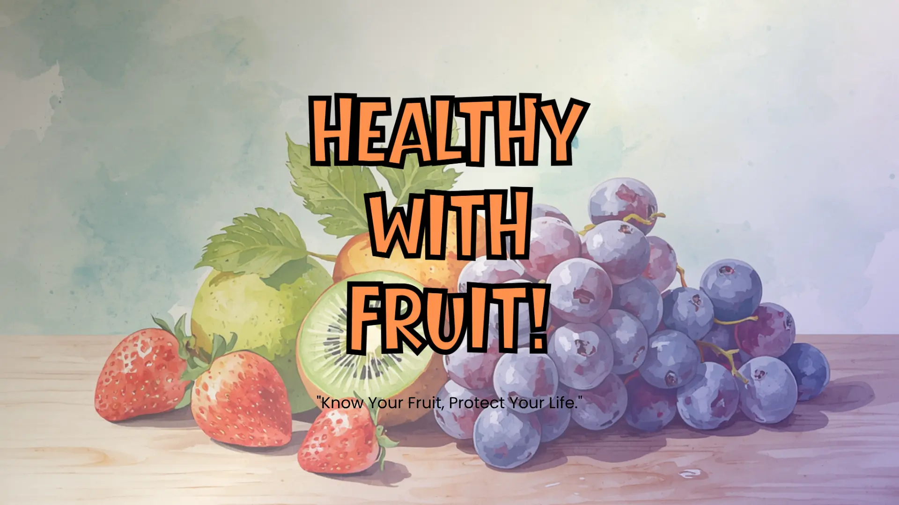

Berhasil: tetap di tempat atau maju 1 langkah.
Educational Board Game
Healthy With Fruit!
Board game edukasi bertema buah-buahan yang menggabungkan permainan ular tangga, kartu tantangan, dan pembelajaran pola hidup sehat.
Vitamin
Fun Learning

Tentang Game
Belajar manfaat buah lewat perjalanan dari Start ke Finish.
Healthy With Fruit! mengajak pemain mengenal pentingnya mengonsumsi buah-buahan bagi kesehatan tubuh. Pemain berjalan di papan permainan seperti ular tangga, lalu menghadapi tantangan edukatif saat berhenti di kotak buah.
Konsepnya sederhana: bermain, menjawab, menyebutkan manfaat buah, dan membangun kebiasaan hidup sehat dengan cara yang ringan.

Game Rules
Tata cara bermain
Siapkan Permainan
Siapkan papan, 1 dadu, pion pemain, dan Kartu Tantangan Buah.
Tentukan Urutan
Semua pemain di Start. Lempar dadu, angka terbesar bermain lebih dulu.
Ikuti Kotak
Tangga naik, ular turun, kotak tantangan mengambil 1 kartu.
Selesaikan Tantangan
Jika berhasil, tetap atau maju 1 langkah. Jika gagal, mundur 1 langkah.
Cara Menang
Pemain pertama yang mencapai kotak Finish menjadi pemenang.
Nilai Edukasi
Apa yang dipelajari pemain?
Game ini dirancang untuk membantu pemain mengenal manfaat buah, membangun kebiasaan makan sehat, dan berinteraksi melalui tantangan.
Manfaat Buah
Mengenal vitamin, serat, dan nutrisi penting dari buah-buahan.
Kebiasaan Sehat
Mendorong pola makan yang baik lewat permainan yang mudah dipahami.
Interaksi Sosial
Melatih komunikasi, kerja sama, dan keberanian menjawab tantangan.
Game Assets
Visual board game dan kartu tantangan






Tentang Kreator
Dibuat oleh Farsha
F
Healthy With Fruit! adalah proyek portfolio board game edukasi yang dirancang untuk membantu anak-anak mengenal manfaat buah dan membangun kebiasaan hidup sehat melalui permainan yang seru dan interaktif.
Portfolio Project